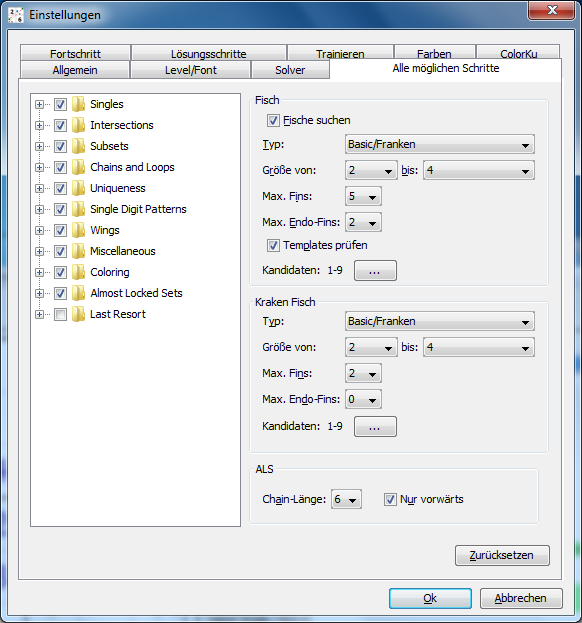

Kapitel 5: Alle möglichen Schritte finden
Inhaltsverzeichnis
Einleitung
Dieser Modus erlaubt es alle Lösungsschritte, die im aktuellen Zustand des Sudokus enthalten sind, zu finden und durchzusehen. Der entsprechende Bereich in der Oberfläche ist in drei Teile geteilt:
- "Suche konfigurieren": Enthält Kurzwahlschalter zum Ein- bzw. Ausschalten der Techniken Forcing Chains, Forcing Nets und Kraken Fish sowie einen Knopf zum Aufrufen des Konfigurationsdialogs
- Die Liste mit den Lösungsschritten: Eine Baumansicht mit allen gefundenen Schritten
- Unterer Bereich mit den Knöpfen "Alle Lösungsschritte finden" (macht auch genau das) und "Zu Lösung hinzufügen" (siehe Lösungswege ändern).
Ein Mausklick auf einen Lösungsschritt zeigt ihn im Sudoku an, wie immer wird der dazugehörige Text in den Hinweis-Bereich geschrieben. Wechselt man zwischen den verschiedenen Ansichten hin und her, kann es vorkommen, dass ein Lösungsschritt zwar in der Liste unter "Alle möglichen Schritte" hervorgehoben wird, nicht aber im Sudoku selbst. Den Schritt noch einmal anzuklicken ändert dabei nichts. Man muss einen anderen Schritt auswählen, damit er im Sudoku sichtbar wird.
Standardmäßig sind alle Techniken außer Forcing Chains/Nets und Kraken Fish aktiviert. Forcing Chains/Nets und Kraken Fish sind ausgeschaltet, weil sie eine sehr große Menge an Lösungsschritten erzeugen, wenn einfache Sudokus nach ihnen durchsucht werden. Für schwerere Sudokus, wo sie unter Umständen notwendig wären, können sie leicht aktiviert werden.
Bitte beachten: Die Ansicht "Alle möglichen Schritte" wird nicht automatisch mit dem Sudoku synchronisiert. Drückt man "Alle Lösungsschritte finden", sind alle angezeigten Schritte für den aktuellen Zustand des Sudokus gültig, aber nichts hindert einen daran, Änderungen im Sudoku vorzunehmen und anschließend einen zuvor berechneten Lösungsschritt auszuwählen. Es besteht eine reelle Chance, dass ein solcher Schritt mittlerweile nicht mehr gültig ist.
Um Unklarheiten zu vermeiden, sollten die Lösungsschritte immer neu berechnet werden, bevor sie verwendet werden.
Konfiguration
Der zur Funktion passende Konfigurationsdialog kann unter "Bearbeiten|Einstellungen|Alle möglichen Schritte" gefunden werden.
Mit der Baumansicht auf der linken Seite kann ausgewählt werden, welche Lösungstechniken in die Suche mit aufgenommen werden sollen.
Die Baumansicht enthält keine Fisch-Techniken (außer Kraken Fisch). Zur Konfiguration der Fischsuche muss der Bereich "Fisch" auf der rechten Seite des Dialogs verwendet werden.
- Fische suchen: Schaltet die Fisch-Suche ein bzw. aus.
- Typ: Erlaubt die Wahl der Fisch-Typen, nach denen gesucht werden soll (nur Basic, Basic und Franken oder alle Typen). Beachten Sie bitte, dass die Suche nach den komplexeren Fischtypen sehr lange dauern kann.
- Größe von/bis: Erlaubt die Angabe, welche Fischgrößen gefunden werden sollen. 3/3 sucht zum Beispiel nur Swordfishes.
- Max. Fins: Die maximale Anzahl an Flossen, für die gesucht werden soll. Will man Finned/Sashimi Fische von der Suche ausschließen, muss hier '0' angegeben werden.
- Max. Endo-Fins: Wie "Max. Fins", aber für Endo-Fins (hat keine Auswirkungen auf die Suche nach Basic-Fischen). Ein großer Wert führt normalerweise zu sehr langen Suchdauern.
- Templates prüfen: Vor der Suche einen Template-Check durchführen (siehe Optionen für Lösungstechniken).
- Kandidaten: Druck auf den Knopf rechts öffnet einen Dialog, der es ermöglicht, die Suche auf bestimmte Kandidaten einzuschränken.
Der Konfigurationsbereich für "Kraken Fisch" hat ähnliche Einstellungen wie der für normale Fische. Ein-/Ausschalten muss allerdings in der Baumansicht durchgeführt werden und eine Template-Check ist nicht möglich, da ein Kraken Fisch andere Ziffern als die Fisch-Ziffer eliminieren kann.
Das Abschnitt "ALS" enthält Optionen für ALS Chains:
- Chain-Länge: Die maximale Anzahl an ALS in der ALS Chain. Größere Werte erhöhen die Suchzeit drastisch.
- Nur vorwärts: Wenn gesetzt (Standardeinstellung), werden keine Rückwärtsglieder in ALS Chains verwendet. Wird die Option ausgeschaltet, werden mehr Chains gefunden, aber die Suchzeit kann extrem lang werden.
Reihenfolge der Lösungsschritte
Mit Hilfe der Knöpfe in der Werkzeugleiste können die Lösungsschritte verschieden angeordnet werden. Die Knöpfe stellen Buchstaben dar, die die Sortierung bestimmen:
- Direkte Singles: Die Schritte werden nach der Anzahl der durch sie entstehenden direkten Singles sortiert (siehe Fortschrittsmaß)
- Singles: Die Schritte werden nach der Gesamtzahl der unter Verwendung der im "Fortschrittsmaß" definierten Schritte verfügbar werdenden Singles sortiert (siehe Fortschrittsmaß)
- Cells (Zellen): Die Schritte werden nach Eliminierungen geordnet (Zellen und Kandidaten in Zellen). Schritte, die mehr als einen Kandidaten eliminieren, werden ein Mal für jeden Kandidaten angeführt
- Eliminierungen: Die Schritte werden nach der Anzahl der Eliminierungen absteigend sortiert. Erzeugen zwei Schritte die gleiche Anzahl an Eliminierungen, werden sie nach Typ sortiert.
- Typ: Die Schritte werden nach Typ sortiert
Copyright © 2008-12 von Bernhard Hobiger
Zuletzt geändert am 5. Mai 2025 von shorty#3746
(basierend auf dem 1to9only Github-Repo)
Alles Material auf dieser Site unterliegt der GNU FDLv1.3.